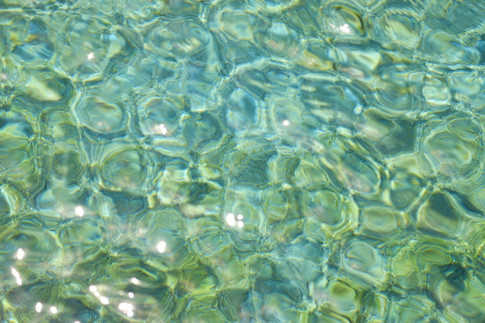

LOAM ROASTERS
LOAM ROASTERS
コーヒーロースターカフェのブランドサイト / 架空
LOAM ROASTERS
コーヒーの品質と洗練された空間にこだわる、オーセンティックな大人のためのロースターカフェ。
https://sakainao-portfolio.github.io/loam/Art Direction / Web Design / Coding
品質や空間、サスティナビリティへのこだわりが伝わるよう、シズル感や高級感、ゆったりとした空気感のあるデザインを目指しました。
AXIS ARCHITECTS
AXIS ARCHITECTS
建築設計事務所のコーポレートサイト / 架空
AXIS ARCHITECTS
徹底したデータ分析とロジックに裏打ちされた、持続可能な建築を求めるクライアントのための設計事務所。
https://sakainao-portfolio.github.io/axis/Art Direction / Web Design / Coding
企業としてのクリーンなイメージや信頼感に加え、洗練された論理的（ロジカル）な美しさが伝わるデザインを目指しました。
Profile

SAKAI NAO
酒井 南緒（さかい なお）
長崎県出身。千葉県在住。東京デザイナー学院ビジュアルデザイン科卒業。
前職のECサイト運営で培ったバックオフィスの知見を活かしつつ、現在は専門学校・職業訓練等で習得したWeb制作やデザインのスキルを深めています。
細やかな気配りと柔軟な対応力を大切にしながら、より良いサイトづくりに貢献したいです。
スキル・使用ツール： HTML5 / CSS3 / JavaScript（学習中） / WordPress / Visual Studio Code
デザイン・制作： Photoshop / Illustrator / バナー制作・レイアウト調整
実務経験： 自社ECサイトおよびモール運営（楽天・Amazon）、バックオフィス・オペレーション業務
3級 ウェブデザイン技能士
Webクリエイター能力認定試験 エキスパート
Creative Works / Artwork